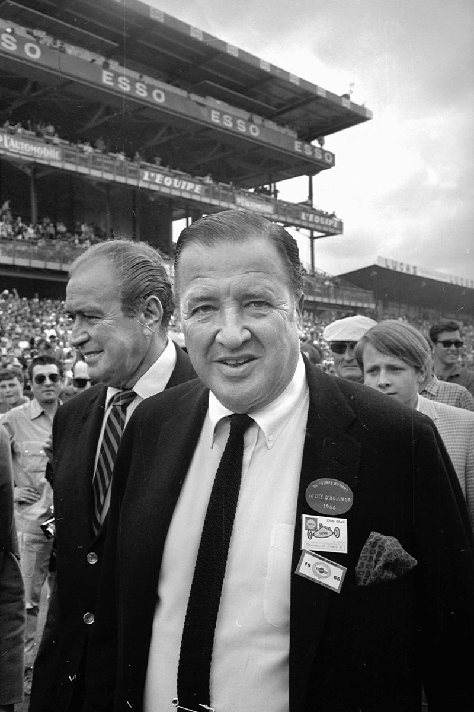
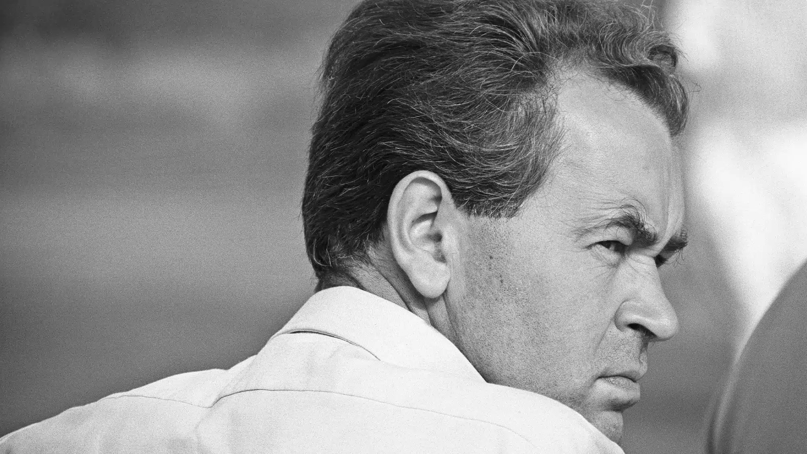

El Ford GT fue creado originalmente en 1964 como el Ford GT40 por la Ford Motor Company. Nació gracias a la obsesión de Henry Ford II de derrotar a Enzo Ferrari en las 24 Horas de Le Mans. El chasis inicial y la carrocería fueron obra del diseñador Eric Broadley de la firma británica Lola Cars, mientras que el desarrollo del motor, las pruebas y la dirección deportiva corrieron a cargo del legendario Carroll Shelby y su piloto Ken Miles.
Hablemos de cada uno
Henry Ford II: El Impulsor y Financista
Aportó: Recursos financieros ilimitados, poder corporativo y determinación absoluta.
Su rol: Tras el fracaso en la compra de Ferrari en 1963, convirtió el proyecto en una vendetta personal.
Impacto: Firmó los cheques en blanco necesarios para crear la división Ford Advanced Vehicles y ordenó ganar en Le Mans a cualquier precio.

Eric Broadley: El Diseñador del Chasis
Aportó: Experiencia en diseño de automóviles de carreras y conocimiento técnico sobre la aerodinámica.
Su rol: Diseñó el chasis del Ford GT40, optimizando su estructura y rendimiento en pista.
Impacto: Su diseño permitió que el GT40 fuera competitivo en Le Mans, sentando las bases para futuras iteraciones del vehículo.

Carroll Shelby: El Gestor y Visionario Mecánico
Aportó: Liderazgo en el desarrollo del vehículo y visión estratégica para la competencia.
Su rol: Supervisó el diseño y la implementación del motor, así como la dirección deportiva del equipo.
Impacto: Transformó el GT40 en un coche ganador, asegurando la victoria de Ford en Le Mans y consolidando su legado en la historia del automovilismo.
Ken Miles: El Desarrollador y Piloto de Pruebas
Aportó: Habilidad técnica en la construcción y tuning del automóvil, junto con experiencia como piloto de pruebas.
Su rol: Participó activamente en las pruebas de rendimiento y en la optimización del vehículo para competencias.
Impacto: Su contribución fue crucial para el éxito del GT40 en Le Mans, y su legado perdura como uno de los pilotos más influyentes en la historia de Ford.